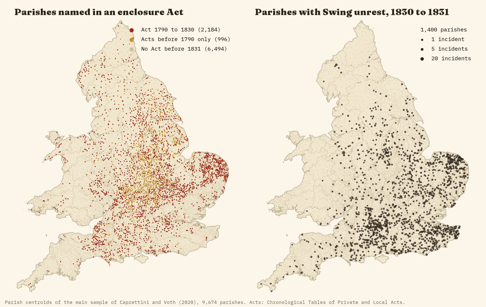
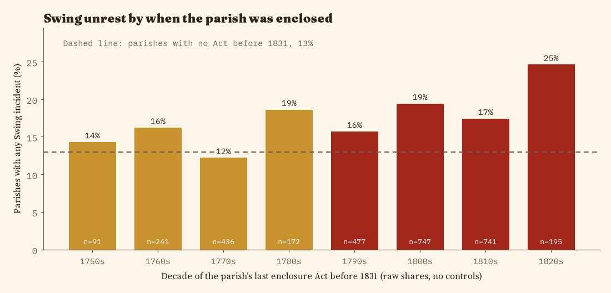
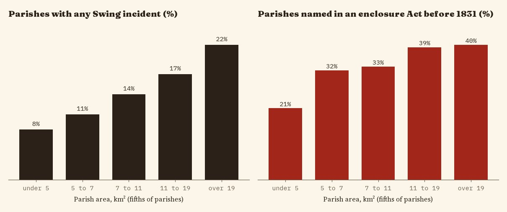
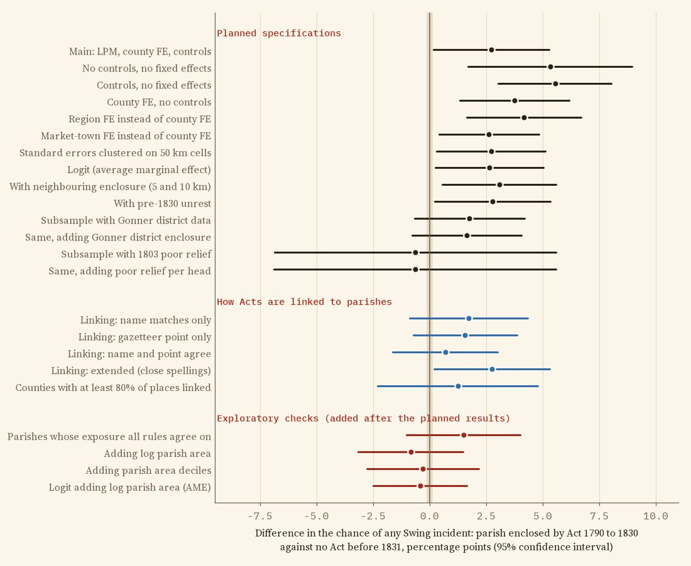

The question
In the autumn of 1830 farm labourers across southern and eastern England broke threshing machines, burned ricks and sent threatening letters signed "Captain Swing". Historians have long argued that parliamentary enclosure, which fenced the open fields and commons of thousands of parishes in the decades before, fed the anger. I test that claim parish by parish.
01A small gap, as planned
I wrote the analysis plan before running any model. Among the parishes of Caprettini and Voth's study of the rising, 18.4% of those enclosed by Act in 1790 to 1830 saw at least one Swing incident, against 13.0% of those with no Act before 1831. In the planned model, which compares parishes within the same county and holds constant threshing machines, population density, farm employment, soils and distances, the gap is 2.7 percentage points (95% confidence interval 0.2 to 5.3), about a fifth of the average chance of unrest.

02But old enclosure looks just the same
If fresh grievance drove the riots, recent enclosure should matter more than enclosure two generations earlier. It does not: parishes whose only Acts came before 1790 have a gap of 3.1 points, and the difference between the two is -0.4 points (p = 0.82). Parishes enclosed in the 1820s do riot most often in the raw figures, but that lead is imprecise and shrinks once size is taken into account.

03The gap is parish size
Large parishes were more likely to be named in an enclosure Act, and more likely to record at least one incident of any kind. In the biggest fifth of parishes 22% saw unrest, in the smallest fifth 8%. Adding parish area to the model, a check I added after seeing the planned results, turns the gap to -0.8 points (95% CI -3.2 to 1.5).


04What it means
The data do not support the idea that recent parliamentary enclosure, parish by parish, predicted where Swing broke out once threshing machines and the size of the parish are taken into account. That is not the same as saying enclosure did not matter: its effects on wages, poor relief and common rights may have spread across whole districts, many southern parishes were enclosed long before by agreement, and the Act data reach only 79% of the places named in Acts of 1790 to 1830.
| Check | Points | 95% CI | N |
|---|---|---|---|
| Main: LPM, county FE, controls | +2.7 | 0.2 to 5.3 | 9,674 |
| No controls, no fixed effects | +5.3 | 1.7 to 8.9 | 9,674 |
| Controls, no fixed effects | +5.5 | 3.0 to 8.0 | 9,674 |
| County FE, no controls | +3.7 | 1.3 to 6.2 | 9,674 |
| Region FE instead of county FE | +4.2 | 1.6 to 6.7 | 9,674 |
| Market-town FE instead of county FE | +2.6 | 0.4 to 4.8 | 9,674 |
| Standard errors clustered on 50 km cells | +2.7 | 0.3 to 5.1 | 9,674 |
| Logit (average marginal effect) | +2.6 | 0.3 to 5.0 | 9,674 |
| With neighbouring enclosure (5 and 10 km) | +3.1 | 0.6 to 5.6 | 9,674 |
| With pre-1830 unrest | +2.8 | 0.2 to 5.3 | 9,674 |
| Subsample with Gonner district data | +1.8 | -0.7 to 4.2 | 6,715 |
| Same, adding Gonner district enclosure | +1.6 | -0.8 to 4.0 | 6,715 |
| Subsample with 1803 poor relief | -0.6 | -6.9 to 5.6 | 1,251 |
| Same, adding poor relief per head | -0.6 | -6.9 to 5.6 | 1,251 |
| Linking: name matches only | +1.7 | -0.9 to 4.3 | 9,674 |
| Linking: gazetteer point only | +1.6 | -0.7 to 3.9 | 9,674 |
| Linking: name and point agree | +0.7 | -1.6 to 3.0 | 9,674 |
| Linking: extended (close spellings) | +2.8 | 0.2 to 5.3 | 9,674 |
| Counties with at least 80% of places linked | +1.2 | -2.3 to 4.8 | 5,614 |
| Parishes whose exposure all rules agree on | +1.5 | -1.0 to 4.0 | 8,692 |
| Adding log parish area | -0.8 | -3.2 to 1.5 | 9,674 |
| Adding parish area deciles | -0.3 | -2.8 to 2.2 | 9,674 |
| Logit adding log parish area (AME) | -0.4 | -2.5 to 1.6 | 9,674 |
| Placebo: first Act 1831 to 1870 (parishes with no earlier Act) | -4.5 | -9.9 to 0.8 | 6,494 |
How I did this
Parishes and riots: the open data of Caprettini and Voth (2020), 10,699 parishes of 1851 with Swing incidents from Holland's Swing Unmasked, threshing-machine records and 1801 census covariates; main sample 9,674. Acts: 4,104 enclosure Acts from the Chronological Tables of Private and Local Acts, from my earlier enclosure study. I linked each place named in an Act to a parish by name within the county named in the title, or else by the point the gazetteer gives it: 79.0% of the 3,322 places named in Acts of 1790 to 1830 were linked, and where both a name and a point exist they agree 90% of the time. A hand check of 100 random links found 97 right.
Models: linear probability models of any Swing incident with county fixed effects and standard errors clustered by county (54 counties), as planned in advance; logit, Poisson, region and market-town effects, placebo Acts of 1831 to 1870 (-4.5 points), a permutation test, leaving out each county in turn (range 2.1 to 3.2), and four alternative linking rules. All of this is correlation, not proof of cause.